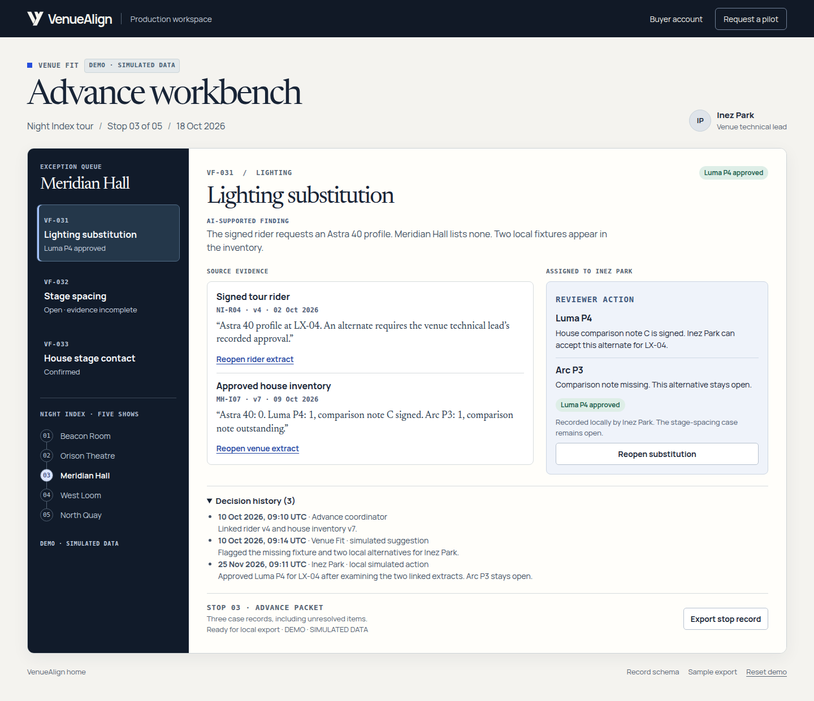

Find the local gap
The fictional Meridian Hall inventory has no Astra 40 profile. Two local alternatives are listed for the technical lead.
Proposed product · Venue Fit
Compare the rider with venue plans and approved inventory. Put uncertain matches in the review queue.
 MH-P02 / S-2
MH-P02 / S-2Product workflow
The fictional Meridian Hall inventory has no Astra 40 profile. Two local alternatives are listed for the technical lead.
Luma P4 has a signed comparison note. Arc P3 still needs supporting documentation. The proposed AI finding points back to the dated sources.
Inez Park can approve the documented substitution in the preview. The clear-width question stays open pending an on-site measurement.
Inside the workbench
At Meridian Hall, a requested fixture is missing and the plan leaves the clear stage width uncertain. Inspect the sources, approve one substitution and see what stays open.
The named technical lead owns the decision. The proposed system links evidence and records the outcome. Equipment, staffing, power, rigging and physical setup need qualified staff review.
Browser capture

The paid evaluation
Bring the rider, the venue file and the person who owned the decision. Build a paid comparison around a case you already know.